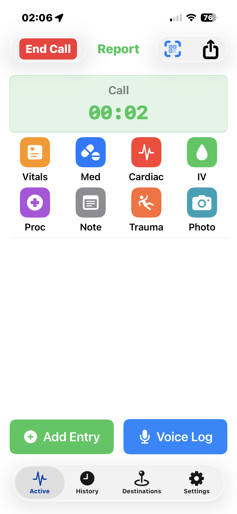
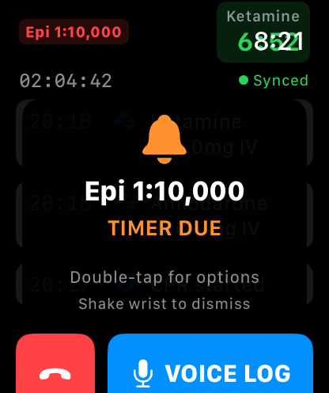
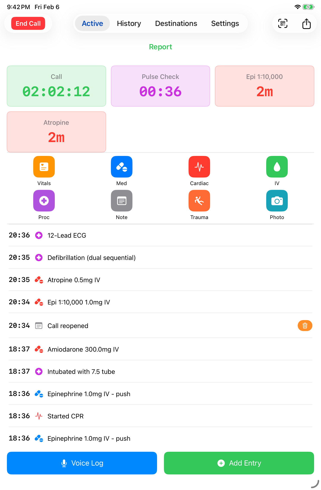
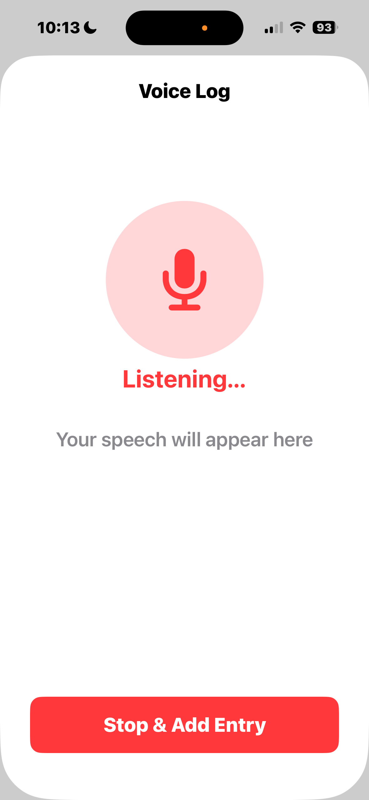
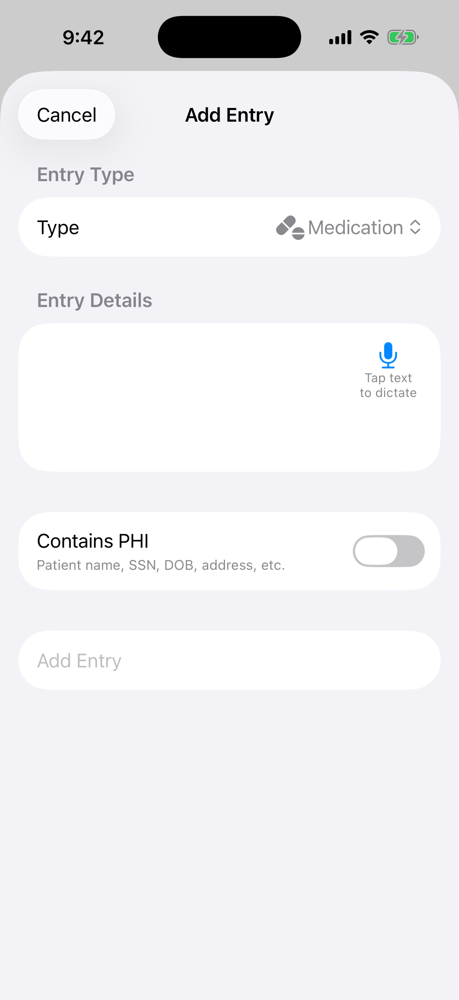
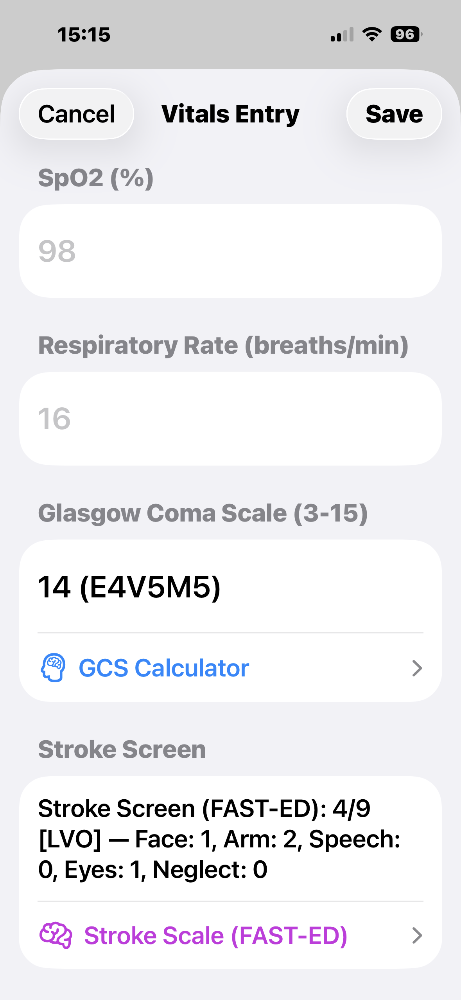
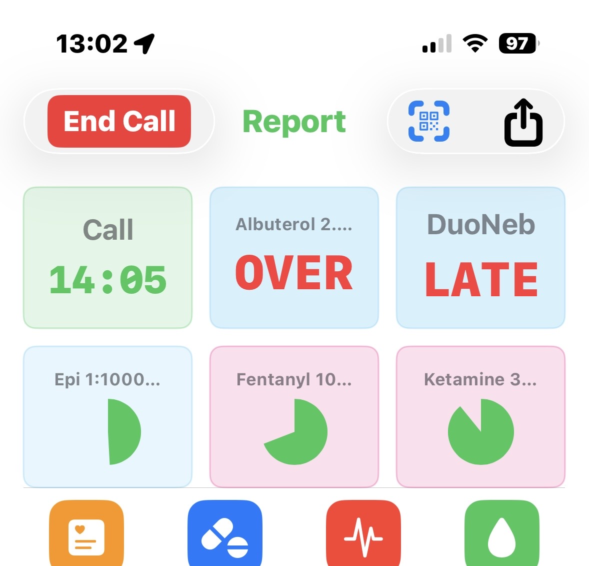

Tutorial
Walk through a sample call from dispatch to handoff
This tutorial demonstrates the typical MedicLog workflow during an ALS cardiac call. Each step shows how the app helps you document care without slowing you down.
Start a Call
Tap Start Call when dispatch tones you out. Optionally enter a run number and patient basics — name, age, sex. All of it is optional; you can add or correct demographics later from the vitals sheet. Call start is timestamped the moment you tap.
The Active Call Screen
You're now on the active call screen. The elapsed timer runs at the top. Below it, the quick entry row gives you one-tap access to Vitals, Medication, IV Access, Cardiac, Procedure, Note, Voice, Photo, and more. Your entry timeline builds below in real time as you log.
Log Initial Vitals
Tap Vitals. Enter BP, heart rate, SpO2, and any other fields your agency has configured. There's a demographics section at the top if you haven't filled it yet. Tap Save — everything is timestamped and drops into the timeline.
Log a Cardiac Intervention
Your patient is in V-fib. Tap Cardiac and switch to the Procedure tab. Select Defibrillation, add a note if needed, and save. The entry is timestamped and appears in the timeline. Continue compressions.
Administer Medications
Tap Medication, select Epinephrine, enter 1mg IV. Tap Save. A 3-minute redose timer appears in the timer grid — color-coded and counting down. Your Watch buzzes at 30 seconds remaining so you stay on track without watching the screen.
Voice Logging from the Watch
While doing compressions, raise your Watch, tap the microphone, and say "Amiodarone 300 IV push." A placeholder entry is logged immediately with the recording start time. The audio routes to your phone for transcription — once resolved, it becomes a structured medication entry in your timeline.
Timer Alerts and Redosing
Your Watch vibrates — 30 seconds to next Epi. When the timer expires, double-tap it to open the timer action sheet. Tap Redose, confirm the pre-filled dose, save. The timer resets and the second dose is logged with its timestamp.
ROSC, Transport, and End Call
ROSC achieved — tap Cardiac → Procedure → ROSC and save. Continue logging vitals en route. At the hospital, tap End Call → Confirm. The Hospital Handoff report opens automatically, pre-populated from everything you logged: vitals, medications, procedures, and timestamps.
Export and Archive
From the post-call summary, tap Share Report to export as PDF or plain text. The call moves to your History tab where you can review, edit any entry, or reopen the call if needed. All data stays on your device until you choose to share or delete it. Direct ePCR system export is on the roadmap.
Key Takeaways
Timestamps Are Automatic
Every tap captures the exact time. No more guessing when you pushed that first Epi.
Timers Keep You On Track
Haptic alerts mean you never miss a redose window, even when your eyes are on the patient.
Voice Works When Hands Don't
Gloved hands, compressions, or driving—speak naturally and MedicLog captures it.
Share Securely
QR code sharing gives receiving facilities your complete documentation instantly.
MedicLog in Action
See how MedicLog looks on iPhone, iPad, and Apple Watch.



Feature Highlights

Voice Entry

Quick Entry

Vitals Entry

Timer Alerts